Getting Started
Important
You will need to register your email address at the atlas you want to download data for, otherwise you will get no data!
Now that you have successfully installed Quail, we’ll provide a quick introduction on building a query to get data. If you’re looking for a discussion on more specialised topics, the Deep Dives tab collates all vignettes on specialised topics. This tutorial serves as an initial method to acquaint you with the plugin.
We will work through the following example (this is specific to the Australian atlas, but can be adapted for others):
Query
“What threatened bird species are present in the Local Government Area of Shoalhaven in the year 2025?”
Taxonomy
Here you can specify taxonomic names for the plugin to search on. Since we are going to be searching for birds in the class Aves, we will enter the name into the text box like so:
{kind=link}
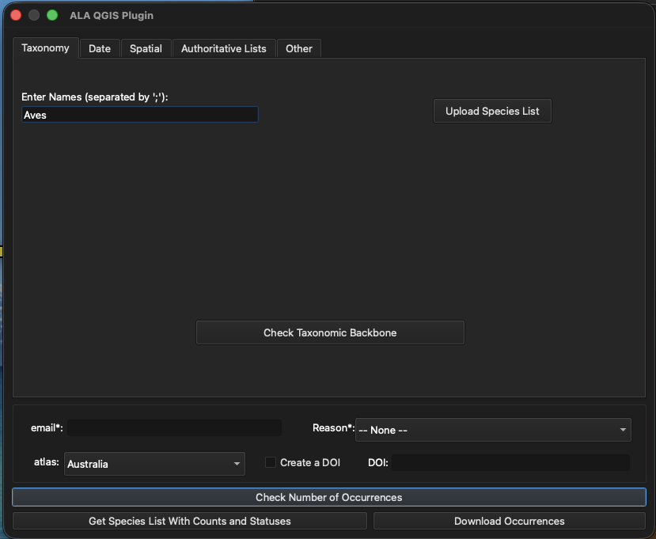
Tip
The “Upload Species List” functionality is intended more for larger lists and cases where specifying higher order taxonomy helps disambiguate species. For a more in-depth explanation of how to do this, see Advanced Taxonomy.
Part of query solved
“What threatened bird species are present in the Local Government Area of Shoalhaven in the year 2025?”
Date
Now we can specify the date range that we want for our query. Go to the “Date” tab, where you will see two calendars:

To choose the year 2025, we will have to select the 1st of January 2025 for the start date, and the 31st of December 2025 as our end date, like so:
{kind=link}
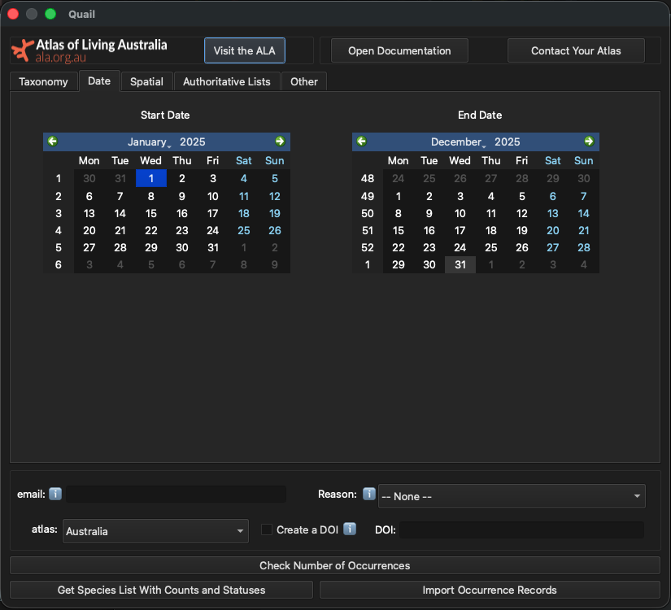
Part of query solved
“What threatened bird species are present in the Local Government Area of Shoalhaven in the year 2025?”
Filtering By Spatial Layers
Another functionality of the Quail is the ability to filter using spatial objects uploaded to QGIS. To use them as filters, go to the “Spatial” tab and press “Update Layers in Plugin.”

Once you do this, a window will pop up, showing all the possible
layers you can use to filter, as well as which column to use to
select the layer. In this example, we will use LGA_NAME25 to
load the names of all the LGAs into the plugin.
{kind=link}
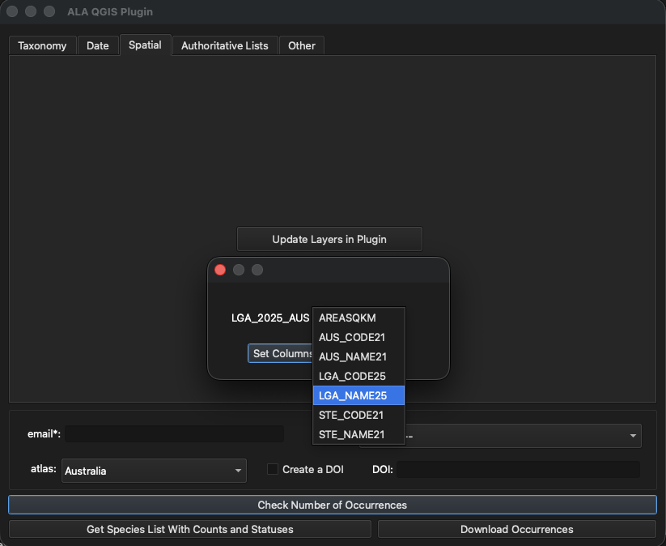
{kind=link}
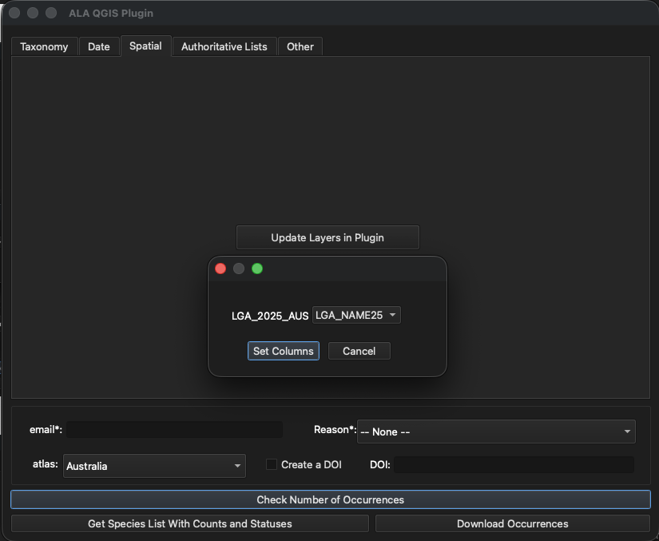
{kind=link}
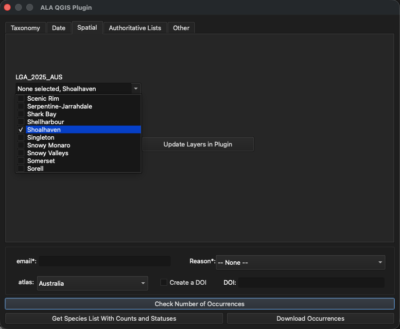
Now that all the layer attributes have been loaded into the plugin, it is time to scroll down the LGA names until you find “Shoalhaven”.
{kind=link}
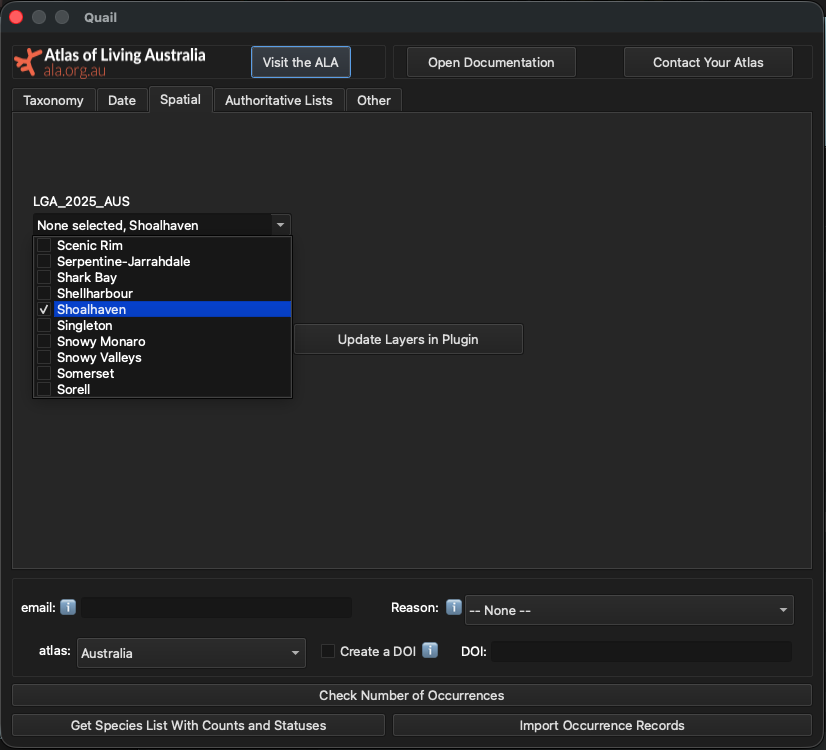
Part of query solved
“What threatened bird species are present in the Local Government Area of Shoalhaven in the year 2025?”
{kind=link}
Other important filters to consider
There are some filters which are of interest and/or important, but did not fit into the previous four tabs. These are: the basis of record, whether or not a species is present or absent, and applying data profiles to your data. If you want more information, you can hover over X and some information will pop up.
We will be ticking the “Present” button to ensure we only get presences. It is important to note that there is vastly more presence data than absence data, so this step may not be required.
{kind=link}
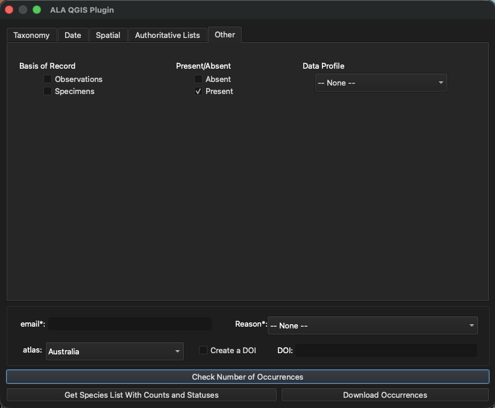
Part of query solved
“What threatened bird species are present in the Local Government Area of Shoalhaven in the year 2025?”
Now, it is time to download the data!
Downloading data
Required Fields
There are two required fields when downloading either a list of species or species’ locations: an email, as well as a reason.
Email: This should be an email of yours that you have registered with the relevant Living Atlas.
Reason: This is to specify why you are downloading data from the specified Living Atlas. Examples are “environmental assessment” and “specied modelling”. These reasons will change with each Living Atlas.
This is how it should look:
{kind=link}
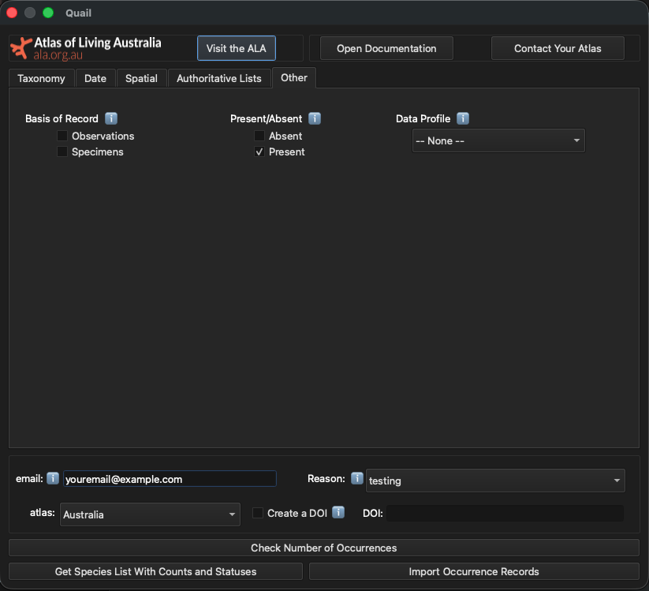
Optional But Recommended: Checking Number of Occurrences
After you have created a query, it is time to start downloading data! Before getting the occurrence records, it is often a good idea to check the number of occurrences your query will be downloading. This will help you determine how long the query will take (1mil records will take longer than 1000 records, for example). This is also a good sanity check before running a query, so you can amend it before clicking the “Download Occurrences” button.
To do this, click the “Check Number of Occurrences” button. A box will pop up like this with the number of counts:
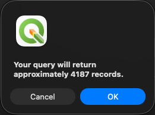
We know now that we are expecting about 4000 records. Now we can download the occurrences.
Download Occurrences
Now it is finally time to download the occurrence records from the ALA. To do this, simply click the “Download Occurrences” button in the lower left-hand corner:
{kind=link}
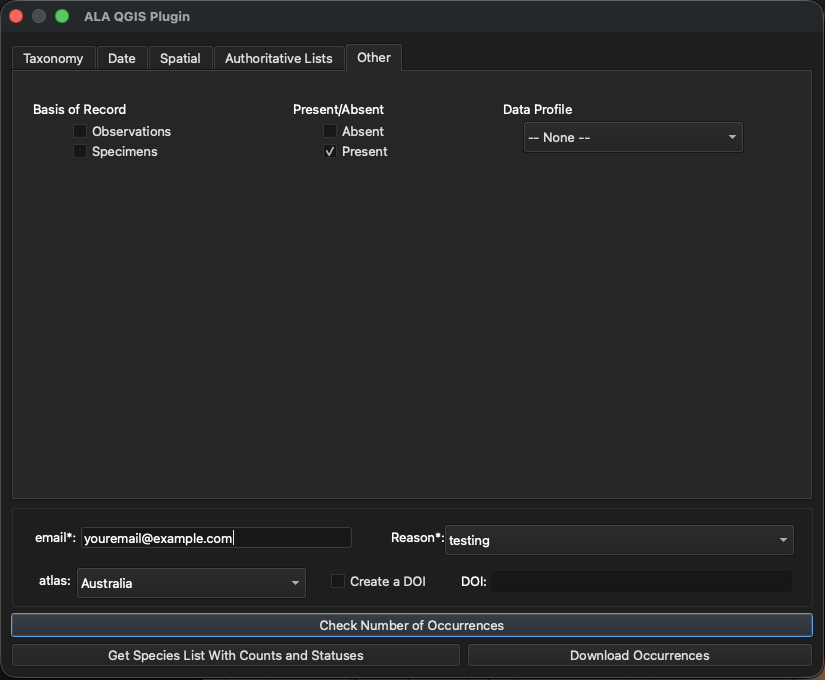
After a bit, navigate to the main QGIS window. Once the plugin is done downloading the occurrences, you will see a new layer titled “data” with all your other spatial layers. Your data should look like this below:
{kind=link}
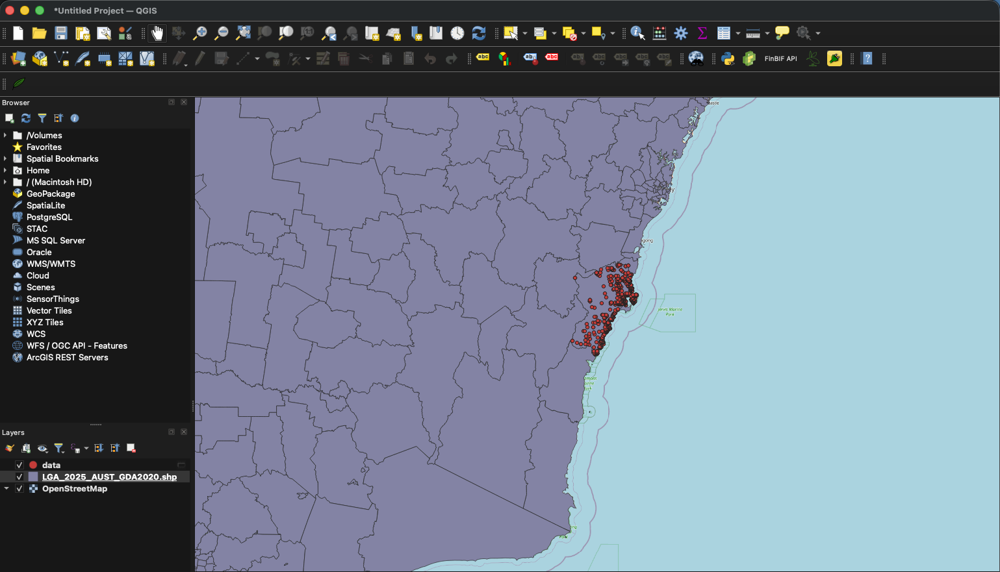
[1] https://threatenedspecies.bionet.nsw.gov.au/profile?id=10562